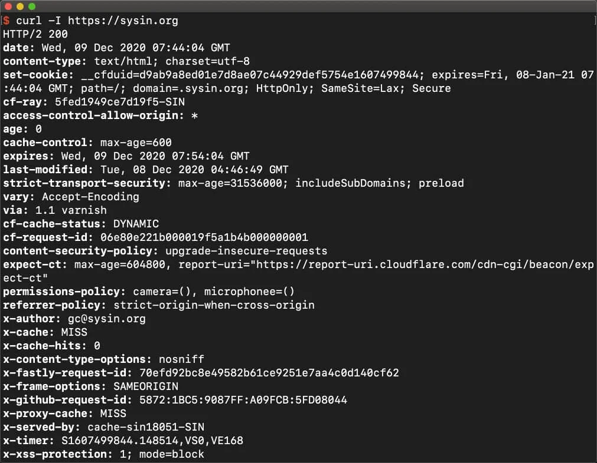

请访问原文链接：HTTP 安全响应头（Security Response header）配置手册 查看最新版。原创作品，转载请保留出处。
作者主页：sysin.org
一、常用安全 Header 释义
1. Strict-Transport-Security (HSTS)
HTTP Strict Transport Security（通常简称为 HSTS）是一个安全功能，它告诉浏览器只能通过 HTTPS 访问当前资源，而不是 HTTP。
作用：访问一个 HTTPS 网站，要求浏览器总是通过 HTTPS 访问它。
语法：
1 | strict-transport-security: max-age=<expire-time> |
示例：
1 | strict-transport-security: max-age=31536000; includeSubDomains; preload |
释义：
max-age=<expire-time>设置在浏览器收到这个请求后的<expire-time>秒的时间内凡是访问这个域名下的请求都使用 HTTPS 请求。includeSubDomains可选，如果这个可选的参数被指定，那么说明此规则也适用于该网站的所有子域名。preload可选，加入预加载列表
谷歌维护着一个 HSTS 预加载服务。按照如下指示成功提交你的域名后，浏览器将会永不使用非安全的方式连接到你的域名。虽然该服务是由谷歌提供的，但所有浏览器都有使用这份列表的意向（或者已经在用了）。但是，这不是 HSTS 标准的一部分，也不该被当作正式的内容。
- Chrome & Chromium 的 HSTS 预加载列表：https://www.chromium.org/hsts
- Firefox 的 HSTS 预加载列表：nsSTSPreloadList.inc
输入 chrome://net-internals/#hsts，进入 HSTS 管理界面，可以增加 / 删除 / 查询 HSTS 记录。
将网站加入预加载列表：https://hstspreload.org/
参考：HTTP Strict Transport Security (HSTS)
2. Public-Key-Pins（HPKP）
作用：防止中间人攻击。是 HTTPS 网站防止攻击者利用 CA 错误签发的证书进行中间人攻击的一种安全机制，用于预防 CA 遭入侵或者其他会造成 CA 签发未授权证书的情况。
服务器通过 Public-Key-Pins（或 Public-Key-Pins-Report-Onky 用于监测）header 向浏览器传递 HTTP 公钥固定信息。
语法：
1 | Public-Key-Pins: pin-sha256="base64=="; max-age=expireTime [; includeSubdomains][; report-uri="reportURI"] |
字段含义：
- pin-sha256：即证书指纹，允许出现多次，实际上应用最少指定两个
- max-age：过期时间
- includeSubdomains：是否包含子域
- report-uri：验证失败时上报的地址
3. Content-Security-Policy（CSP）
X-Content-Security-Policy（旧版）/Content-Security-Policy：
CSP 是一个计算机的安全标志，主要用来防止 XSS、点击劫持、SQL 注入等攻击；CSP 通过定义运行加载脚本的位置和内容防止恶意代码的加载。
作用：用于定义页面可以加载哪些资源，减少和上报 XSS 的攻击，防止数据包嗅探攻击。
响应头：
- Content-Security-Policy
- X-Content-Security-Policy
- X-Webkit-CSP
使用方法：
1 | Content-Security-Policy: default-src 'self' |
- 一个策略由一系列策略指令组成，每个策略指令都描述了一个针对某个特定类型资源以及生效范围的策略。
- default-src 是 CSP 指令，多个指令之间使用英文分号分割。
- self 是指令值，多个指令值用英文空格分割。
- 支持的 CSP 指令。
元素也可以用于配置 CSP：
| 指令 | 指令值示例 | 说明 |
|---|---|---|
| default-src | ‘self’ cnd.a.com | 定义针对所有类型资源的默认加载策略，某类型资源如果没有单独定义策略，就使用默认的 |
| script-src | ‘self’ js.a.com | 定义针对 JavaScript 的加载策略 |
| style-src | ‘self’ css.a.com | 定义针对样式的加载策略 |
| img-src | ‘self’ img.a.com | 定义针对图片的加载策略 |
| connect-src | ‘self’ | 针对 Ajax、WebSocket 等请求的加载策略。不允许的情况下，浏览器会模拟一个状态为 400 的响应 |
| font-src | font.a.com | 针对 WebFont 的加载策略 |
| object-src | ‘self’ | 针对 <object>、<embed>、<applet> 等标签引入的 flash 等插件的加载策略 |
| media-src | media.a.com | 针对 <audio>、<video> 等标签引入的 HTML 多媒体的加载策略 |
| frame-src | ‘self’ | 针对 frame 的加载策略 |
| sanbox | allow-forms | 对请求的资源启用 sandbox（类似于 iframe 的 sandbox 属性） |
| report-uri | /report-uri | 告诉浏览器如果请求不被策略允许，往哪个地址提交日志信息。如果想让浏览器只汇报日志，不阻止任何内容，可以改用 Content-Security-Policy-Report-Only 头 |
指令值可以由下面内容组成：
| 指令值 | 指令值示例 | 说明 |
|---|---|---|
| img-src | 允许任何内容 | |
| ‘none’ | img-src ‘none’ | 不允许任何内容 |
| ‘self’ | img-src ‘self’ | 允许来自相同源的内容（相同的协议、域名和端口） |
| data: | img-src data: | 允许 data: 协议 (如 base64 编码的图片) |
| www.a.com | img-src img.a.com | 允许加载指定域名的资源 |
| .a.com | img-src .a.com | 允许加载 a.com 任何子域的资源 |
| https://img.com | img-src https://img.com | 允许加载 img.com 的 https 资源 |
| https: | img-src https: | 允许加载 https 资源 |
| ‘unsafe-inline’ | script-src ‘unsafe-inline’ | 允许加载 inline 资源（例如常见的 style 属性，onclick, inline js, inline css） |
| ‘unsafe-eval’ | script-src ‘unsafe-eval’ | 允许加载动态 js 代码，例如 eval() |
违例报告
- document-uri：发生违规的文档的 URI。
- referrer：违规发生处的文档引用地址
- blocked-uri：被 CS P 阻止的资源 URI。如果被阻止的 URI 来自不同的源而非文档 URI，则被阻止的资源 URI 会被删减，仅保留协议、主机和端口号。
- violated-directive：违反的策略名称
- original-policy：在 Content-Security-Policy HTTP header 中指明的原始策略。
示例：让浏览器自动升级请求，访问到 http 资源时自动替换成 https 请求
1 | Content-Security-Policy: upgrade-insecure-requests |
参考：内容安全策略 CSP
4. Referrer-Policy
用来监管哪些访问来源信息——会在 Referer 中发送——应该被包含在生成的请求当中。（注意 Referer 实际上是单词 “referrer” 的错误拼写。Referrer-Policy 这个首部并没有延续这个错误拼写。）
作用：增加隐私保护。
语法
1 | Referrer-Policy: no-referrer |
可配置值：
- no-referrer：不允许被记录。
- origin：只记录 origin，即域名。
- strict-origin：只有在 HTTPS -> HTTPS 之间才会被记录下来。
- strict-origin-when-cross-origin：同源请求会发送完整的 URL；HTTPS->HTTPS，发送源；降级下不发送此首部。
- no-referrer-when-downgrade(default)：同 strict-origin。
- origin-when-cross-origin：对于同源的请求，会发送完整的 URL 作为引用地址，但是对于非同源请求仅发送文件的源。
- same-origin：对于同源请求会发送完整 URL，非同源请求则不发送 referer。
- unsafe-url：无论是同源请求还是非同源请求，都发送完整的 URL（移除参数信息之后）作为引用地址。（可能会泄漏敏感信息）。
5. Expect-CT
Expect-CT 头允许站点选择性报告和 / 或执行证书透明度 (Certificate Transparency) 要求，来防止错误签发的网站证书的使用不被察觉。当站点启用 Expect-CT 头，就是在请求浏览器检查该网站的任何证书是否出现在公共证书透明度日志之中。
另外一种解释：用于指示浏览器或者客户端验证签名证书的时间戳
语法
1 | Expect-CT: report-uri="<uri>"; |
指令
-
max-age
该指令指定接收到
Expect-CT头后的秒数，在此期间用户代理应将收到消息的主机视为已知的 Expect-CT 主机。如果缓存接收到的值大于它可以表示的值，或者如果其随后计算溢出，则缓存将认为该值为 2147483648（2 的 31 次幂）或其可以方便表示的最大正整数。 -
report-uri=
<uri>可选该指令指定用户代理应向其报告 Expect-CT 失效的 URI。当
enforce指令和report-uri指令共同存在时，这种配置被称为 “强制执行和报告” 配置，示意用户代理既应该强制遵守证书透明度政策，也应当报告违规行为。 -
enforce 可选
该指令示意用户代理应强制遵守证书透明度政策（而不是只报告合规性），并且用户代理应拒绝违反证书透明度政策的之后连接。当
enforce指令和report-uri指令共同存在时，这种配置被称为 “强制执行和报告” 配置，示意用户代理既应该强制遵守证书透明度政策，也应当报告违规行为。
示例
以下示例指定 24 小时的证书透明度执行，并向 foo.example 报告违规行为.
1 | Expect-CT: max-age=86400; enforce; report-uri="https://foo.example/report" |
参考：Expect-CT
6. Access-Control-Allow-Origin
Access-Control-Allow-Origin 响应头指定了该响应的资源是否被允许与给定的 origin 共享。跨原始资源共享（CORS）允许网站在它们之间共享内容，为了使网站之间安全的跨域获取资源，可以通过设置 Access-Control-Allow-Origin 来允许指定网站来跨域获取本地资源。
当目标页面的
response中包含Access-Control-Allow-Origin这个 header，并且 value 有对方的域名，浏览器才允许目标获取页面的数据。
示例：只允许”10.10.10.10“访问自己本地资源
1 | Access-Control-Allow-Origin: http://10.10.10.10 |
语法
1 | Access-Control-Allow-Origin: * |
指令
*
对于不需具备凭证（credentials）的请求，服务器会以 “*” 作为通配符，从而允许所有域都具有访问资源的权限。
<origin>
指定一个可以访问资源的 URL。
参考：Access-Control-Allow-Origin
7. Cache-Control
Cache-Control 通用消息头字段，被用于在 http 请求和响应中，通过指定指令来实现缓存机制。缓存指令是单向的，这意味着在请求中设置的指令，不一定被包含在响应中。
缓存机制可以减少对网络带宽的占用，可以提高访问速度，提高用户的体验，特定请求被禁止缓存可以提高安全性。
语法：
指令不区分大小写，并且具有可选参数，可以用令牌或者带引号的字符串语法。多个指令以逗号分隔。
- 缓存请求指令
客户端可以在 HTTP 请求中使用的标准 Cache-Control 指令。
1 | Cache-Control: max-age=<seconds> |
- 缓存响应指令
服务器可以在响应中使用的标准 Cache-Control 指令。
1 | Cache-control: must-revalidate |
- 扩展
Cache-Control指令
拓展缓存指令不是核心 HTTP 缓存标准文档的一部分，使用前请注意检查 兼容性！
1 | Cache-control: immutable |
指令：
-
可缓存性
-
public表明响应可以被任何对象（包括：发送请求的客户端，代理服务器，等等）缓存，即使是通常不可缓存的内容。（例如：1. 该响应没有
max-age指令或Expires消息头；2. 该响应对应的请求方法是 POST。） -
private表明响应只能被单个用户缓存，不能作为共享缓存（即代理服务器不能缓存它）。私有缓存可以缓存响应内容，比如：对应用户的本地浏览器。
-
no-cache在发布缓存副本之前，强制要求缓存把请求提交给原始服务器进行验证 (协商缓存验证)。
-
no-store缓存不应存储有关客户端请求或服务器响应的任何内容，即不使用任何缓存。
-
-
到期
-
max-age=<seconds>设置缓存存储的最大周期，超过这个时间缓存被认为过期 (单位秒)。与
Expires相反，时间是相对于请求的时间。 -
s-maxage=<seconds>覆盖
max-age或者Expires头，但是仅适用于共享缓存 (比如各个代理)，私有缓存会忽略它。 -
max-stale[=<seconds>]表明客户端愿意接收一个已经过期的资源。可以设置一个可选的秒数，表示响应不能已经过时超过该给定的时间。
-
min-fresh=<seconds>表示客户端希望获取一个能在指定的秒数内保持其最新状态的响应。
-
stale-while-revalidate=<seconds>表明客户端愿意接受陈旧的响应，同时在后台异步检查新的响应。秒值指示客户愿意接受陈旧响应的时间长度。
-
stale-if-error=<seconds>表示如果新的检查失败，则客户愿意接受陈旧的响应。秒数值表示客户在初始到期后愿意接受陈旧响应的时间。
-
-
重新验证和重新加载
-
must-revalidate一旦资源过期（比如已经超过
max-age），在成功向原始服务器验证之前，缓存不能用该资源响应后续请求。 -
proxy-revalidate与 must-revalidate 作用相同，但它仅适用于共享缓存（例如代理），并被私有缓存忽略。
-
immutable表示响应正文不会随时间而改变。资源（如果未过期）在服务器上不发生改变，因此客户端不应发送重新验证请求头（例如
If-None-Match或 If-Modified-Since）来检查更新，即使用户显式地刷新页面。在 Firefox 中，immutable 只能被用在https://transactions. 有关更多信息，请参阅 这里。
-
-
其他
-
no-transform不得对资源进行转换或转变。
Content-Encoding、Content-Range、Content-Type等 HTTP 头不能由代理修改。例如，非透明代理或者如 Google’s Light Mode 可能对图像格式进行转换，以便节省缓存空间或者减少缓慢链路上的流量。no-transform指令不允许这样做。 -
only-if-cached表明客户端只接受已缓存的响应，并且不要向原始服务器检查是否有更新的拷贝。
-
8. Set-Cookie
由服务器端向客户端发送 cookie
语法：
1 | Set-Cookie: <cookie-name>=<cookie-value> |
安全相关：
- HttpOnly：防止使用 javascript（如 document.cookie）去存取 cookie
- Secure：强制 cookie 只能在 HTTPS 环境下传递
参考：Set-Cookie
9. X-Frame-Options
是否允许一个页面可在 <frame>、<iframe>、<embed> 或者 <object> 中展现的标记。
-
frame 标签：框架标签，放置一个 HTML 文档（页面）
-
iframe 标签：内联框架标签，在一个 HTML 页面中显示（插入）另一个 HTML 页面
-
embed 标签：音频元素标签，插入一个音频元素
-
object 标签：定义外部内容的容器标签
作用：减少 / 避免点击劫持 (clickjacking) 的攻击。
语法：
1 | X-Frame-Options: DENY |
响应头支持三种配置：
- DENY：表示该页面不允许在 frame 中展示，即便是在相同域名的页面中嵌套也不允许。
- SAMEORIGIN：表示该页面可以在相同域名页面的 frame 中展示。
- ALLOW-FROM uri：表示该页面可以在指定来源的 frame 中展示。
10. X-XSS-Protection
HTTP X-XSS-Protection 响应头是 Internet Explorer，Chrome 和 Safari 的一个特性，当检测到跨站脚本攻击 (XSS) 时，浏览器将停止加载页面。若网站设置了良好的 Content-Security-Policy 来禁用内联 JavaScript ('unsafe-inline')，现代浏览器不太需要这些保护，但其仍然可以为尚不支持 CSP 的旧版浏览器的用户提供保护。
作用：防范 XSS 攻击。
PS：这个是旧属性，基本上可以被 CSP 取代，但是仍可以为还没有支持 CSP 的浏览器提供一层保护。
主流浏览器默认都开启了 XSS 保护。
语法：
1 | X-XSS-Protection: 0 |
释义：
- 0：禁止 XSS 过滤。
- 1：启用 XSS 过滤（通常浏览器是默认的）。如果检测到跨站脚本攻击，浏览器将清除页面（删除不安全的部分）。
- 1; mode=block：启用 XSS 过滤。如果检测到攻击，浏览器将不会清除页面，而是阻止页面加载。
- 1; report=
<reporting-URI>(Chromium only)：启用 XSS 过滤。如果检测到跨站脚本攻击，浏览器将清除页面并使用 CSPreport-uri指令的功能发送违规报告。
11. X-Content-Type-Options
X-Content-Type-Options HTTP 消息头相当于一个提示标志，被服务器用来提示客户端一定要遵循在 Content-Type 首部中对 MIME 类型 的设定，而不能对其进行修改。这就禁用了客户端的 MIME 类型嗅探 行为。
作用：禁用浏览器的 Content-Type 猜测行为。
背景：浏览器通常会根据响应头 Content-Type 字段来分辨资源类型。有些资源的 Content-Type 是错的或者未定义。这时，浏览器会启用 MIME-sniffing 来猜测该资源的类型，解析内容并执行。利用这个特性，攻击者可以让原本应该解析为图片的请求被解析为 JavaScript。
使用方法：
1 | X-Content-Type-Options: nosniff |
12. X-Permitted-Cross-Domain-Policies
用于指定客户端能够访问的跨域策略文件的类型。
跨域策略文件是一种 XML 文件，用于授予 Web 客户端应用权限以处理跨域数据，如 Adobe Flash、Adobe Reader 等。当客户端请求托管在非自己域上的内容时，远程域需要配置一个跨域策略文件以授权请求域的访问，从而使得客户端继续进行相应的交互。
语法：
1 | X-Permitted-Cross-Domain-Policies: none |
释义：
- none：目标服务器的任何位置都不允许使用策略文件，包括主策略文件
- master-only：仅允许使用主策略文件
- by-content-type：仅限 HTTP/HTTPS 协议使用，只允许使用 Content-Type: text/x-cross-domain-policy 提供的策略文件
- by-ftp-filename：仅限 FTP 协议使用，只允许使用文件名为 crossdomain.xml 的策略文件
- all：目标域上的所有策略文件都可以使用
13. Permissions-Policy（Feature-Policy）
2020 年 7 月 16 日，W3C 组织发布规范，Feature Policy 正式更名为 Permissions Policy。
参看：Feature-Policy 退场，欢迎 Permissions-Policy ！
Feature Policy 是一个新的 http 响应头属性，允许一个站点开启或者禁止一些浏览器属性和 API，来更好的确保站点的安全性和隐私性。有点类似 内容安全策略，但是它控制的是浏览器的特征而不是安全行为.
跟其他 http 安全响应头的设置一样，只需要敲定页面具体的限制策略，然后在 http 响应头中返回相应的策略即可：
1 | Feature-Policy: vibrate 'self'; usermedia '*'; sync-xhr 'self' sysin.org |
语法
1 | Feature-Policy: <feature> <allowlist> |
<feature> 允许开启或者禁止的浏览器属性和 API 列表
允许开启或者禁止的浏览器属性和 API 列表还没有完全敲定，比如 Mozilla 可以使用的指令有（see Features list）：
1 | Accelerometer |
For now, there are a couple of ways to see what features are controllable.
-
Check out our Feature Policy Kitchen Sink of demos. It has examples of each policy that’s been implemented in Blink.
-
Check Chrome’s source for the list of feature names.
-
Query
document.featurePolicy.allowedFeatures()onabout:blankto find the list:1
2
3
4
5
6
7
8
9
10
11
12["geolocation",
"midi",
"camera",
"usb",
"magnetometer",
"fullscreen",
"animations",
"payment",
"picture-in-picture",
"accelerometer",
"vr",
... -
Check [chromestatus.com](https://www.chromestatus.com/features#component%3A Blink>FeaturePolicy) for the policies that have been implemented or are being considered in Blink.
<allowlist> 取值，可以同时取多个值
*：在页面和内嵌 iframes 里面都允许。self：在页面上允许，在内嵌 iframes 内只允许同源资源使用。src：仅在 iframe 内生效的属性，只允许 iframe 内 src 属性与设置头相同的资源使用。none：在页面和内嵌中全部禁止。<origin(s)>：允许在特定的 origin 中使用，多个 origins 可以用空格隔开。
‘*’ 和’none’ 单独使用，‘self’ 和’src’可以和一个或者多个 origins 并列使用
示例：
禁用摄像头和定位 API，则可以在返回的 response 中传递以下定义 feature policy 的 HTTP 的头部信息：
1 | Feature-Policy: camera 'none'; geolocation 'none' |
语法变更：
原有 Feature-Policy 示例：
1 | Feature-Policy: geolocation 'self' https://sysin.org; microphone 'none' |
Permissions-Policy 语法变更为：
1 | Permissions-Policy: geolocation=(self "https://sysin.org"), microphone=() |
例如，本站部署的 Header：
1 | "Feature-Policy": "camera'none'; microphone'none'" |
也相应变更为：
1 | "Permissions-Policy": "camera=()，microphonee=()" |
二、配置方法
以添加以下 Header 示例：
1 | x-frame-options: SAMEORIGIN |
1. 应用交付控制器
-
F5 BIG-IP (iRules)
1
2
3when HTTP_RESPONSE {
HTTP::header insert X-Frame-Options "SAMEORIGIN"
}移除、替换原有 Header
1
2
3
4
5when HTTP_RESPONSE {
HTTP::header replace Server "SYSIN.ORG/2.0"
HTTP::header remove X-AspNet-Version
HTTP::header remove X-Powered-By
} -
Ctrix ADC (AppExpert)
1
add rewrite action insert_x-frame-options_act insert_http_header X-Frame-Options "\"SAMEORIGIN\""
移除、替换原有 Header
1
2add rewrite action server-header-remove-act delete_http_header X-Powered-By
add rewrite action server-header-remove-act delete_http_header X-AspNet-Version
2. Web 服务器
-
配置 Apache，所有页面上发送
X-Frame-Options响应头，需要在site中配置如下：1
Header always set X-Frame-Options "SAMEORLGIN"
移除、替换原有 Header
1
2Header always unset "X-Powered-By"
Header unset "X-Powered-By”语法：
Header [condition] add|append|echo|edit|edit*|merge|set|setifempty|unset|note header [[expr=]value [replacement] [early|env=[!]varname|expr=expression]]替换 Server
需要 Apache mod_security module (For CentOS:
yum install mod_security)1
2ServerTokens Prod
SecServerSignature “Your-Server-Name” -
配置 Nginx，所有页面上发送
X-Frame-Options响应头，在http,server或者location配置中添加：1
add_header X-Frame-Options "SAMEORLGIN" always;
也可以使用模块：more_set_headers
清除 Header：more_clear_headers
1
2more_clear_headers 'X-Hidden-*'; #支持通配符
more_clear_headers 'X-Powered-By';Install
1
2
3
4
5# Debian/Ubuntu the first
~/$> sudo apt install nginx-extras
# RHEL and Amazon Linux
~/$> yum install nginx-plus-module-headers-moreRemove Server Header
1
2
3
4
5# /etc/nginx/nginx.conf
http {
# Basic Settings
more_set_headers 'Server:';Override Server Header
1
2
3
4
5# /etc/nginx/nginx.conf
http {
# Basic Settings
more_set_headers 'Server: None Of Your Business';Remove Server Version from Header
1
2
3
4
5# /etc/nginx/nginx.conf
http {
# Basic Settings
server_tokens off; -
配置 IIS，在 Web.config 文件中添加：
1
2
3
4
5
6
7<system.webServer>
<httpProtocol>
<customHeaders>
<add name="X-Frame-Options" value="SAMEORLGIN" />
</customHeaders>
</httpProtocol>
</system.webServer>或者使用 “Internet Information Services (IIS) Manager” > HTTP Response Headers，直接添加。
删除和修改 Server Header
下载 并安装 UrlScan，编辑配置文件 URLScan.ini（位于 %WINDIR%\System32\Inetsrv\URLscan）
1
2RemoveServerHeader=0 #默认，修改值为 1 则不发送 Server header
AlternateServerName = 需要替换的名称删除或者修改 X-Powered-By
“Internet Information Services (IIS) Manager” > HTTP Response Headers，直接修改或者删除。
删除 X-AspNet-Version
在站点的 web.config 文件下的
<system.web>结点下添加1
<httpRuntime enableVersionHeader="false" />
3. 应用程序
这里提供部分示例：
-
JAVA
Spring Security 支持在响应中添加各种安全头，默认响应安全头如下：
1
2
3
4
5
6
7Cache-Control: no-cache, no-store, max-age=0, must-revalidate
Pragma: no-cache
Expires: 0
X-Content-Type-Options: nosniff
Strict-Transport-Security: max-age=31536000 ; includeSubDomains
X-Frame-Options: DENY
X-XSS-Protection: 1; mode=block示例：Spring Security 用 “X-Frame-Options: SAMEORIGIN” 允许 iframes 在同一个域。
1
2
3
4
5
6
7
8
9
10
11
12
13
14
15
16
17
18
19
20
21
22
23
24
25
26
public class WebSecurityConfig extends
WebSecurityConfigurerAdapter {
protected void configure(HttpSecurity http) throws Exception {
http
// ...
.headers()
.frameOptions()
.sameOrigin();
}
}
public class WebSecurityConfig extends
WebSecurityConfigurerAdapter {
protected void configure(HttpSecurity http) throws Exception {
http
// ...
.headers()
.frameOptions()
.sameOrigin();
}
} -
PHP
1
2
3
header('x-frame-options: SAMEORIGIN');1
2
3
4
5
6
7
8
9
10
11
12
13
14
15# In this example a HTTP header X-PHP-Version is added to the HTTP request. The value of this header is the version string of the PHP interpreter that is running the instance of HTTP_Request.
require_once "HTTP/Request.php";
$req =& new HTTP_Request("http://sysin.org/");
$req->addHeader("X-PHP-Version", phpversion());
$response = $req->sendRequest();
if (PEAR::isError($response)) {
echo $response->getMessage();
} else {
echo $req->getResponseBody();
} -
C#
1
2
3
4
5
6
7
8
9
10
11
12
13
14
15
16
17
18
19
20
21
22
23using System;
using System.Text;
using Microsoft.Web.Administration;
internal static class Sample
{
private static void Main()
{
using (ServerManager serverManager = new ServerManager())
{
Configuration config = serverManager.GetWebConfiguration("Default Web Site");
ConfigurationSection httpProtocolSection = config.GetSection("system.webServer/httpProtocol");
ConfigurationElementCollection customHeadersCollection = httpProtocolSection.GetCollection("customHeaders");
ConfigurationElement addElement = customHeadersCollection.CreateElement("add");
addElement["name"] = @"x-frame-options";
addElement["value"] = @"SAMEORIGIN";
customHeadersCollection.Add(addElement);
serverManager.CommitChanges();
}
}
} -
1
2
3
4
5
6
7
8
9
10
11
12
13
14
15
16
17
18
19
20
21Imports System
Imports System.Text
Imports Microsoft.Web.Administration
Module Sample
Sub Main()
Dim serverManager As ServerManager = New ServerManager
Dim config As Configuration = serverManager.GetWebConfiguration("Default Web Site")
Dim httpProtocolSection As ConfigurationSection = config.GetSection("system.webServer/httpProtocol")
Dim customHeadersCollection As ConfigurationElementCollection = httpProtocolSection.GetCollection("customHeaders")
Dim addElement As ConfigurationElement = customHeadersCollection.CreateElement("add")
addElement("name") = "x-frame-options"
addElement("value") = "SAMEORIGIN"
customHeadersCollection.Add(addElement)
serverManager.CommitChanges()
End Sub
End Module -
JavaScript
1
2
3
4
5
6
7
8
9
10
11var adminManager = new ActiveXObject('Microsoft.ApplicationHost.WritableAdminManager');
adminManager.CommitPath = "MACHINE/WEBROOT/APPHOST/Default Web Site";
var httpProtocolSection = adminManager.GetAdminSection("system.webServer/httpProtocol", "MACHINE/WEBROOT/APPHOST/Default Web Site");
var customHeadersCollection = httpProtocolSection.ChildElements.Item("customHeaders").Collection;
var addElement = customHeadersCollection.CreateNewElement("add");
addElement.Properties.Item("name").Value = "x-frame-options";
addElement.Properties.Item("value").Value = "SAMEORIGIN";
customHeadersCollection.AddElement(addElement);
adminManager.CommitChanges();
三、安全响应头设置建议
可以查看一些领先的网站实例，参考配置。
通常需要修改、移除和添加一些 Header 如下：
1. 需要修改的 Header
1 | Server |
2. 需要移除的 Header
1 | X-Powered-By |
3. 建议添加的 Header
1 | Strict-Transport-Security |
示例：
1 | "Content-Security-Policy": "upgrade-insecure-requests", |
4. 通过 Security Headers 网站检测
注意 FAQ 中的要点：
How do I get an A+ grade?
To get an A+ grade your site needs to issue all of the HTTP response headers that we check for. This indicates a high level of commitment to improving security for your visitors.
What headers do you check for?
Over a HTTP connection we check for Content-Security-Policy, X-Content-Type-Options, X-Frame-Options and X-XSS-Protection. Over a HTTPS connection we check for 2 additional headers which are Strict-Transport-Security and Public-Key-Pins.
四、资源网站
MDN HTTP Headers
Veracode Blog：Application Security Research, News, and Education
五、检测工具
-
在线检查网站：https://securityheaders.com/（推荐，提供配置建议）
-
命令行工具：
curl：
curl -I https://sysin.org
hsecscan（Python）
-
浏览器自带开发者工具，或者第三方 Header 扩展

文章用于推荐和分享优秀的软件产品及其相关技术，所有软件默认提供官方原版（免费版或试用版），免费分享。对于部分产品笔者加入了自己的理解和分析，方便学习和研究使用。任何内容若侵犯了您的版权，请联系作者删除。如果您喜欢这篇文章或者觉得它对您有所帮助，或者发现有不当之处，欢迎您发表评论，也欢迎您分享这个网站，或者赞赏一下作者，谢谢！
 支付宝赞赏
支付宝赞赏
 微信赞赏
微信赞赏
赞赏一下